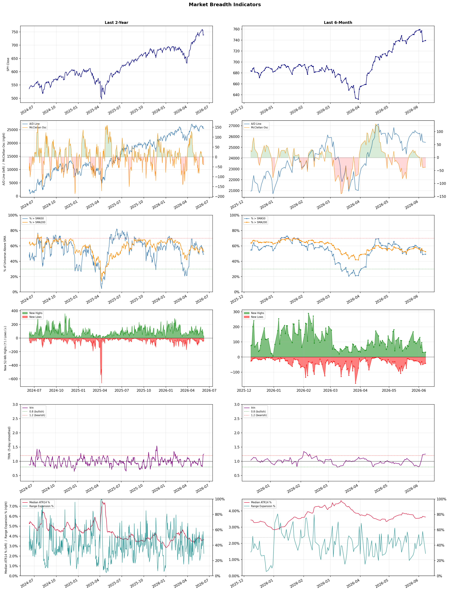

A daily research map of market breadth, industry rotation, and technical setups
| Item | Read |
|---|---|
| Regime | Neutral |
| Risk posture | Cautious |
| Indices | QQQ 716.07 (+1.6% today) |
| Universe | 1,702 stocks tracked · 33 new 52-week highs · 30 active swing setups |
| Breadth | only 49.2% of tracked stocks are above SMA50, new lows exceed new highs (42 vs 33), McClellan oscillator (breadth momentum) is negative at -37.5 |
| Leadership | Trucking, Computer Hardware, and Electronic Components |
| Weakest groups | Other Precious Metals & Mining, Utilities - Independent Power Producers, and Gold |
Use this report to prioritize research and chart review; validate entries, stops, liquidity, earnings, and risk before acting.
| Item | Read |
|---|---|
| Primary read | Neutral regime with Cautious risk posture. |
| Research queue | RXO, WERN, KNX, ODFL, XPO |
| Leadership focus | Trucking, Computer Hardware, and Electronic Components |
| Caution list | Other Precious Metals & Mining, Utilities - Independent Power Producers, and Gold |
| Review prompt | Check extension risk, chart location, fundamentals, valuation, and earnings before using any research row. |
| Item | Read |
|---|---|
| Primary read | 4 active risk warnings; use screen output as watchlist input only. |
| Bullish screens | PK, ELV, OSCR, CDP, MXL |
| Bearish screens | DOX, WIX, TRMB, TTD, CRK |
| Alerts / levels | Automated trigger, stop, ATR, liquidity, reward/risk, and event-risk levels are pending future enrichment. |
| Review prompt | Open the linked chart, define trigger and invalidation, then check liquidity and event risk independently. |
Risk Posture: Cautious — screen backdrop is selective; prioritize research in top-ranked groups
Metric context: McClellan below -50 = elevated selling pressure; below -100 = washout territory. Range Expansion = share of stocks with daily range above their 20-day average. Signal Density = share of tracked names appearing in signal screens.
| Breadth Date | % > SMA50 | % > SMA200 | New Highs | New Lows | McClellan | Median Range | Avg Range | Median ATR14 | Range Expansion | Signal Density |
|---|---|---|---|---|---|---|---|---|---|---|
| 2026-06-08 | 49.2% | 52.6% | 33 | 42 | -37.5 | 2.7% | 3.2% | 3.6% | 29.0% | 1.8% |

Prior comparison date: June 5, 2026
| Metric | Prior | Current | Change |
|---|---|---|---|
| Regime | Defensive | Neutral | changed |
| Risk Posture | Defensive | Cautious | changed |
| % > SMA50 | 48.8% | 49.2% | +0.4 pts |
| % > SMA200 | 53.8% | 52.6% | -1.2 pts |
| New Highs | 32 | 33 | +1 |
| New Lows | 49 | 42 | +7 |
Top-10 industries entering: none. Top-10 industries leaving: none. New multi-signal long setups: BNL, CDP, CFFN, DE, FBP. New multi-signal short setups: CRK, CSAN, DOX, GRAB, GTM.
| Status | Tickers | Read |
|---|---|---|
| Added | BNL, CDP, CFFN, CRK, CSAN, DE, DOX, FBP | New technical screen matches vs prior report. |
| Removed | ABBV, AMN, DRH, EXEL, FMC, HLT, HNGE, HST | No longer present in today's technical screen matches. |
| Still Active | CPT, ELV, FCF, KRG, LCID, LLY, LU, UNM | Appeared in both current and prior reports. |
| Promoted | none | Model Screen Score improved by at least 15 points. |
| Downgraded | none | Model Screen Score declined by at least 15 points. |
| Direction | Industry | ETF | Prior Rank | Current Rank | Days | Rank Change |
|---|---|---|---|---|---|---|
| Rose | Diagnostics & Research | N/A | 95 | 15 | 42 | +80 |
| Rose | Solar | TAN | 77 | 8 | 42 | +69 |
| Rose | Apparel Retail | XRT | 94 | 28 | 28 | +66 |
| Rose | Airlines | N/A | 91 | 27 | 42 | +64 |
| Rose | Residential Construction | ITB | 93 | 30 | 35 | +63 |
Bull: The Diagnostics & Research sector is experiencing rising relative strength largely due to increased investor confidence driven by positive market sentiment and growth potential in healthcare technologies, as highlighted by Morningstar's recommendation of top healthcare stocks and Agilent Technologies' projected 43.86% upside. Additionally, the sector's rally, evidenced by Waters' 5.3% jump, reflects broader enthusiasm for innovations like AI in healthcare, which is attracting attention from analysts and investors alike, further solidifying the sector's bullish outlook.
Bear: While the Diagnostics & Research sector may currently exhibit rising relative strength and positive sentiment, this could be misleading as it often reflects short-term market euphoria rather than sustainable growth. The recent headlines, particularly the significant share dump by Harvest Investment Services in Adaptive Biotechnologies, suggest underlying concerns about valuations and long-term viability, indicating that investor confidence may be overly optimistic and potentially vulnerable to corrections. Additionally, the hype surrounding AI in healthcare may not translate into immediate financial performance, as many companies in this space are still in the early stages of development and may face regulatory and operational hurdles that could hinder growth.
Verdict: The Diagnostics & Research sector's rising relative strength is fundamentally driven by heightened investor confidence in healthcare technologies, bolstered by positive market sentiment and promising growth projections, such as Agilent Technologies' significant upside potential. However, a key risk lies in the potential for overvaluation and the reality that the excitement surrounding AI innovations may not yield immediate financial results, as many companies are still navigating developmental and regulatory challenges that could impact long-term growth. Investors should remain cautious and consider the sustainability of this bullish trend before making significant commitments.
Sources: Google News
Bull: The solar industry is experiencing a significant rise in relative strength due to a combination of strong year-to-date performance, with ETFs like TAN gaining at least 35%, and a notable shift in global energy dynamics, as wind and solar have overtaken gas as primary energy sources. The recent surge in solar stocks, driven by positive earnings reports such as Nextpower's, indicates robust sector momentum, while the ETF hitting a new 52-week high reflects increased investor confidence in solar's growth potential amidst a broader transition to environmentally friendly energy solutions.
Bear: While the solar industry has seen a notable rise in relative strength and impressive year-to-date gains, this surge may be more reflective of a market correction rather than sustainable growth, particularly given the volatility and cyclical nature of the sector. Additionally, the recent performance could be overstated by temporary factors such as government incentives and a rebound from a particularly challenging previous year, rather than a fundamental shift in demand or profitability. As interest rates rise, the cost of capital for solar projects could increase, potentially dampening future investment and growth in the sector.
Verdict: The solar industry's rise is fundamentally driven by a combination of strong year-to-date performance, increasing global demand for renewable energy, and a shift in energy dynamics favoring solar and wind over fossil fuels. However, investors should remain cautious of the bear case, which highlights the potential for volatility due to rising interest rates and the possibility that current gains may be unsustainable, driven more by temporary incentives than by lasting demand. To navigate this landscape, investors should closely monitor interest rate trends and government policy changes that could impact the cost of capital and overall sector growth.
Sources: Yahoo Finance, Google News
Bull: The Apparel Retail sector is likely experiencing rising relative strength due to a combination of positive earnings reports and a broader market rebound, particularly in consumer discretionary spending as indicated by the strong performance of companies like Victoria’s Secret and Shoe Carnival. The headlines suggest a growing optimism in the industry, with reports highlighting a turnaround in key players and identifying several apparel stocks well-positioned for growth, signaling increased consumer demand and confidence in the sector's recovery. This aligns with the overall trend of equity futures moving higher, particularly as investors respond favorably to economic signals that support consumer spending.
Bear: While the recent headlines may suggest a positive turnaround for certain companies in the apparel retail sector, it is crucial to recognize that these outliers do not necessarily reflect the broader industry landscape. Rising relative strength could be misleading, as it may be driven by short-term market reactions rather than sustainable consumer demand; economic data remains mixed, and persistent inflationary pressures could dampen discretionary spending, leading to potential headwinds for the sector. Furthermore, the overall economic uncertainty and changing consumer preferences could result in volatility, making it risky to assume that the current momentum will continue.
Verdict: The apparel retail sector's recent rise in relative strength is fundamentally driven by positive earnings reports from key players and a rebound in consumer discretionary spending, suggesting a potential recovery in consumer confidence. However, investors should remain cautious of the bear case, as persistent inflation and economic uncertainty could undermine this momentum and lead to decreased discretionary spending in the near future. It is advisable to monitor economic indicators closely and consider diversifying investments to mitigate risks associated with potential volatility in the sector.
Sources: Yahoo Finance, Google News
Bull: The rising relative strength of the airline industry can be attributed to a robust recovery in travel demand, as indicated by recent headlines highlighting the best airline stocks to buy, suggesting positive investor sentiment. Despite some short-term pressures from profit warnings, the overall trend remains bullish due to strong consumer spending on travel and leisure, which is expected to drive revenue growth for airlines in the coming years, as noted by sources like Zacks Investment Research and The Motley Fool. Additionally, the focus on long-term investment opportunities in the sector signals confidence in its resilience and potential for profitability.
Bear: While the rising relative strength of the airline industry may suggest a recovery, recent profit warnings from major players like Delta indicate significant underlying challenges that could undermine this trend. High operational costs, including fuel price volatility and labor shortages, coupled with potential economic headwinds such as inflation and rising interest rates, could dampen consumer spending on travel, ultimately leading to a more cautious outlook for revenue growth in the sector. Additionally, the focus on long-term investment opportunities may overlook the cyclical nature of the airline industry, which is prone to downturns during economic uncertainty.
Verdict: The airline industry's rising relative strength is primarily driven by a robust recovery in travel demand, fueled by strong consumer spending and positive investor sentiment, despite some short-term profit warnings. However, key risks include high operational costs and economic pressures, such as inflation and rising interest rates, which could dampen consumer travel spending and challenge revenue growth. Investors should closely monitor these economic indicators and operational challenges when considering positions in airline stocks.
Sources: Google News
Bull: The rising relative strength of the Residential Construction sector, as reflected in the ITB ETF, is primarily driven by declining mortgage rates, which are making home purchases more affordable and stimulating demand for new homes. Headlines highlighting lower rates benefitting home construction stocks and the perception of undervaluation in home-builder stocks post-Berkshire's endorsement further bolster investor confidence, suggesting a rebound is imminent in the sector. Additionally, the focus on construction materials and positive earnings reports indicates a solid foundation for growth as the industry adapts to changing market conditions.
Bear: While declining mortgage rates may temporarily boost affordability, the current average rate of 6.51% remains historically high, which could deter potential buyers and dampen demand for new homes in the long run. Additionally, the residential construction sector faces significant headwinds, including rising construction costs, labor shortages, and potential economic uncertainty that could lead to a slowdown in housing demand, undermining the bullish narrative of a sustained rebound. Furthermore, the perception of undervaluation in home-builder stocks may be misleading if the broader economic environment deteriorates, leading to further declines in housing prices and investor sentiment.
Verdict: The residential construction sector is experiencing a rise primarily due to declining mortgage rates, which enhance affordability and stimulate demand for new homes, as evidenced by positive trends in the ITB ETF and favorable earnings reports. However, a key risk lies in the persistently high average mortgage rate of 6.51%, along with rising construction costs and labor shortages, which could hinder long-term demand and lead to a potential slowdown in the housing market. Investors should closely monitor these economic indicators and be cautious of overestimating the sustainability of the current rebound.
Sources: Yahoo Finance, Google News
| Direction | Industry | ETF | Prior Rank | Current Rank | Days | Rank Change |
|---|---|---|---|---|---|---|
| Fell | Uranium | URA | 11 | 95 | 28 | -84 |
| Fell | Chemicals | N/A | 10 | 89 | 35 | -79 |
| Fell | Utilities - Independent Power Producers | XLU | 23 | 97 | 35 | -74 |
| Fell | Apparel Manufacturing | N/A | 14 | 82 | 42 | -68 |
| Fell | Copper | COPX | 8 | 76 | 7 | -68 |
Bear: While the bull analyst highlights the potential of nuclear power as a solution to rising electricity demand, the current bearish trend in uranium stocks, as indicated by the falling relative-strength trend of the URA ETF, suggests that investor sentiment is not aligned with this optimism. The focus on alternative energy sources and commodities may indicate a broader shift in investment priorities, and liquidity issues with smaller ETFs like NUKZ could signal a lack of robust institutional support for the uranium sector. Moreover, the long lead times and regulatory hurdles associated with nuclear projects may hinder the sector's ability to capitalize on short-term market trends, leaving uranium investments vulnerable to prolonged underperformance.
Bull: The relative weakness of uranium stocks, as indicated by the ETF URA, can be attributed to the broader market's focus on alternative energy sources and the surging demand for electricity driven by AI advancements, as highlighted in the headlines. While nuclear power is recognized as a critical solution to meet this increased demand, the current momentum appears to favor other sectors like AI and commodities, which may overshadow uranium investments in the short term. Additionally, the liquidity concerns surrounding smaller ETFs like NUKZ suggest a potential lack of investor confidence in the uranium sector, further contributing to its relative underperformance.
Verdict: The falling trend in uranium stocks is primarily driven by a shift in investor focus towards alternative energy sources and commodities, overshadowing the potential of nuclear power to meet rising electricity demand. Key risks include the lack of institutional support for the uranium sector, as evidenced by liquidity concerns in smaller ETFs like NUKZ, and the long lead times and regulatory challenges that could impede nuclear project developments. Investors should closely monitor market sentiment and regulatory developments to gauge the timing of potential rebounds in uranium investments.
Sources: Yahoo Finance, Google News
Bear: While geopolitical tensions may create short-term opportunities for certain players, the long-term outlook for the chemicals sector remains precarious due to structural challenges such as overcapacity, rising raw material costs, and increasing regulatory pressures on environmental standards. Additionally, the bullish sentiment around specific stocks may be misleading, as they could be outliers in a sector that is generally underperforming, suggesting that investors should be cautious about chasing trends without considering the broader economic landscape and potential for sustained declines.
Bull: The Chemicals sector is experiencing a decline in relative strength primarily due to geopolitical tensions, particularly the ongoing conflict involving Iran, which has disrupted supply chains and increased competition from regions like China, as highlighted by Reuters. Additionally, while there are bullish sentiments surrounding specific stocks, such as those mentioned by The Motley Fool and Financial Times, the overall sector faces headwinds from underperformance relative to basic materials, as noted by Yahoo Finance, indicating a challenging environment for broader chemical companies amidst these macroeconomic pressures.
Verdict: The chemicals sector is likely declining due to a combination of geopolitical tensions disrupting supply chains and structural challenges such as overcapacity and rising raw material costs, which are exacerbated by increasing regulatory pressures. Investors should be cautious, as the bullish sentiment around select stocks may not reflect the overall sector's struggles, highlighting the risk of chasing trends without recognizing the potential for sustained declines amidst a challenging economic landscape. Therefore, a prudent approach would be to reassess exposure to the sector and consider reallocating investments to more resilient industries.
Sources: Google News
Bear: While the bull analyst highlights macroeconomic concerns and the potential impact of rising interest rates on utility stocks, it's essential to consider that the Independent Power Producers sector is facing structural challenges beyond just interest rates. The increasing competition from renewable energy sources and the push for decarbonization could lead to regulatory pressures and higher operational costs, making it difficult for traditional utility companies to maintain profitability. Furthermore, as investor sentiment shifts towards technology and AI, traditional utilities may struggle to attract capital, exacerbating their relative weakness in the market.
Bull: The Utilities - Independent Power Producers sector is likely experiencing a decline in relative strength due to macroeconomic concerns, particularly the Federal Reserve's pivot to focus on inflation under new leadership, as indicated by Steve Liesman's report. This shift may lead to rising interest rates, which typically pressure utility stocks due to their capital-intensive nature and reliance on debt financing. Additionally, the increasing focus on technology and AI in other sectors, as highlighted in the article about electricity benefiting from AI, may divert investor attention away from traditional utilities, further contributing to their relative underperformance.
Verdict: The Utilities - Independent Power Producers sector is likely declining due to rising interest rates driven by the Federal Reserve's inflation focus, which pressures capital-intensive utility stocks reliant on debt financing. Additionally, the structural challenges posed by increasing competition from renewable energy and regulatory pressures for decarbonization could further erode profitability and investor interest. Investors should closely monitor these macroeconomic and structural factors, as they pose significant risks to traditional utility companies' market performance.
Sources: Yahoo Finance, Google News
Bear: While the bull analyst attributes the Apparel Manufacturing sector's decline to broader market volatility and temporary sector-specific pressures, the reality is that fundamental challenges persist, including rising production costs, supply chain disruptions, and a shift toward sustainable fashion that many traditional brands are ill-equipped to navigate. Additionally, the optimistic projections for growth in specific stocks may overlook the broader trend of changing consumer behavior, where discretionary spending is increasingly being redirected towards experiences rather than apparel, indicating a more profound and lasting headwind for the industry.
Bull: The Apparel Manufacturing sector is experiencing a decline in relative strength primarily due to broader market volatility and sector-specific pressures, as highlighted by Columbia Sportswear's 5.4% drop amid sector-wide selling. This downturn may be exacerbated by shifting consumer preferences and economic uncertainties, which have led to cautious spending in retail, despite optimistic projections for growth in specific stocks, as noted in multiple articles discussing the potential for a rebound and investment opportunities in the industry.
Verdict: The Apparel Manufacturing sector's decline is primarily driven by fundamental challenges such as rising production costs, supply chain disruptions, and a significant shift in consumer preferences towards sustainable fashion and experiential spending. The key risk highlighted by the bear thesis is that traditional brands may struggle to adapt to these changes, leading to a prolonged downturn in the industry as discretionary spending continues to favor experiences over apparel. Investors should remain cautious and consider reallocating resources to companies that are effectively addressing these evolving consumer trends.
Sources: Google News
Bear: While the bull analyst points to a shift in investor interest towards AI and alternative energy as a reason for copper's declining relative strength, this overlooks the fundamental supply-demand dynamics in the copper market. With global manufacturing showing signs of weakness, the demand for copper—often seen as a bellwether for economic health—could diminish significantly, leading to excess supply and downward pressure on prices. Furthermore, the recent headlines suggest a growing focus on niche sectors like nuclear and grid resilience, which may not necessarily translate into increased copper demand, thereby raising concerns about the future profitability of copper investments.
Bull: Copper's relative strength is likely falling due to concerns over global manufacturing weakening, as highlighted in the headline about the potential impact on the copper ETF. This sentiment is exacerbated by the broader market themes of AI and alternative energy, which may be drawing investor interest away from traditional commodities like copper. Additionally, the focus on specific sectors, such as nuclear and grid resilience, suggests a shift in investment priorities that could be sidelining copper in favor of more innovative or emerging technologies.
Verdict: The copper industry is experiencing a decline primarily due to weakening global manufacturing, which diminishes demand for copper as a key economic indicator. This trend is compounded by shifting investor focus towards AI and alternative energy sectors, potentially sidelining traditional commodities like copper. The key risk from the bear case lies in the possibility of excess supply if demand continues to falter, which could lead to significant downward pressure on copper prices. Investors should closely monitor manufacturing indicators and sector shifts to gauge future copper demand.
Sources: Yahoo Finance, Google News
| Industry | Rank | ETF | 7d | 14d | 28d | 42d | Chg 42d | Size | 20D | 60D | Composite | Active Setups |
|---|---|---|---|---|---|---|---|---|---|---|---|---|
| Trucking | 1 | IYT | 5 | 11 | 12 | 6 | +5 | 5 | 22.3% | 62.1% | 0.976 | 1 |
| Computer Hardware | 2 | XLK | 1 | 1 | 3 | 5 | +3 | 14 | 14.1% | 65.7% | 0.971 | 1 |
| Electronic Components | 3 | XLK | 3 | 8 | 5 | 3 | 0 | 9 | 14.3% | 56.3% | 0.954 | 0 |
| Semiconductors | 4 | SOXX | 2 | 2 | 1 | 1 | -3 | 36 | 14.5% | 98.8% | 0.947 | 2 |
| REIT - Hotel & Motel | 5 | XLRE | 9 | 9 | 16 | 12 | +7 | 7 | 13.4% | 33.0% | 0.939 | 2 |
| Healthcare Plans | 6 | IHF | 13 | 5 | 6 | 15 | +9 | 11 | 11.5% | 55.9% | 0.910 | 2 |
| Communication Equipment | 7 | IYZ | 6 | 4 | 4 | 4 | -3 | 17 | 9.9% | 43.8% | 0.874 | 1 |
| Solar | 8 | TAN | 4 | 3 | 25 | 77 | +69 | 8 | 15.9% | 32.9% | 0.854 | 1 |
| REIT - Office | 9 | XLRE | 24 | 20 | 22 | 38 | +29 | 10 | 6.6% | 20.4% | 0.847 | 2 |
| Electrical Equipment & Parts | 10 | XLI | 11 | 7 | 10 | 8 | -2 | 11 | 7.9% | 32.1% | 0.846 | 2 |
Rank columns (7d–42d) show the industry's rank that many trading days ago — lower is stronger. Chg 42d = rank change vs 42 trading days ago — positive means the industry moved up. 20D and 60D are the mean stock return within the industry over that period. Active Setups: count of today's swing-trade candidates from this industry appearing across all signal screens.
| Industry | Rank | ETF | 7d | 14d | 28d | 42d | Chg 42d | Size | 20D | 60D | Composite | Active Setups |
|---|---|---|---|---|---|---|---|---|---|---|---|---|
| Other Precious Metals & Mining | 98 | N/A | 70 | 83 | 34 | 90 | -8 | 5 | -19.7% | -24.2% | 0.052 | 1 |
| Utilities - Independent Power Producers | 97 | XLU | 86 | 78 | 66 | 48 | -49 | 5 | -9.2% | -8.8% | 0.063 | 1 |
| Gold | 96 | GDX | 71 | 92 | 63 | 79 | -17 | 31 | -18.1% | -23.1% | 0.070 | 1 |
| Uranium | 95 | URA | 93 | 95 | 11 | 47 | -48 | 6 | -18.1% | -17.7% | 0.095 | 0 |
| Agricultural Inputs | 94 | N/A | 73 | 64 | 76 | 70 | -24 | 7 | -7.4% | -14.2% | 0.109 | 2 |
| REIT - Mortgage | 93 | N/A | 94 | 88 | 79 | 67 | -26 | 15 | -7.5% | -4.3% | 0.130 | 3 |
| Financial Data & Stock Exchanges | 92 | N/A | 79 | 71 | 60 | 85 | -7 | 7 | -7.1% | -6.0% | 0.135 | 1 |
| Household & Personal Products | 91 | XLP | 90 | 89 | 91 | 96 | +5 | 12 | -6.6% | -8.2% | 0.158 | 1 |
| Packaged Foods | 90 | XLP | 98 | 97 | 97 | 98 | +8 | 17 | -5.4% | -12.1% | 0.160 | 2 |
| Chemicals | 89 | N/A | 66 | 44 | 28 | 37 | -52 | 9 | -10.1% | -7.6% | 0.192 | 1 |
Rank columns (7d–42d) show the industry's rank that many trading days ago — lower is stronger. Chg 42d = rank change vs 42 trading days ago — positive means the industry moved up. 20D and 60D are the mean stock return within the industry over that period. Active Setups: count of today's swing-trade candidates from this industry appearing across all signal screens.
These are research candidates from top-ranked stocks, capped at five names per industry to avoid over-concentration. Returns shown (60D, 120D, 250D) are historical — they reflect where prices have already moved, not forward expectations. Extension Risk flags names that may require extra patience or a better entry point. They are not buy signals.
Chart: TV = TradingView chart (opens in browser); PDF = local chart file (if downloaded).
| Ticker | Name | Industry | Industry Rank | Market Cap | 60D Hist | 120D Hist | 250D Hist | Extension Risk | Research Reason | Chart |
|---|---|---|---|---|---|---|---|---|---|---|
| RXO | RXO Inc | Trucking | 1 | 2.3B | 132.2% | 81.9% | 73.2% | Very extended | Top-ranked in industry; very extended | TV |
| WERN | Werner Enterprises | Trucking | 1 | 1.8B | 60.0% | 45.0% | 62.7% | Extended | Top-ranked in industry; extended | TV |
| KNX | Knight-Swift Transportation | Trucking | 1 | 9.2B | 55.2% | 51.7% | 81.9% | Extended | Top-ranked in industry; extended | TV |
| ODFL | Old Dominion Freight Line | Trucking | 1 | 40.4B | 40.2% | 54.9% | 52.3% | Constructive | Top-ranked in industry | TV |
| XPO | XPO | Trucking | 1 | 22.1B | 22.9% | 50.7% | 87.9% | Constructive | Top-ranked in industry | TV |
| DELL | Dell Technologies | Computer Hardware | 2 | 97.1B | 167.3% | 208.3% | 250.9% | Very extended | Top-ranked in industry; very extended | TV |
| IONQ | IonQ Inc | Computer Hardware | 2 | 13.1B | 90.1% | 24.7% | 56.8% | Extended | Top-ranked in industry; extended | TV |
| QBTS | D-Wave Quantum | Computer Hardware | 2 | 6.8B | 44.9% | -1.0% | 43.9% | Constructive | Top-ranked in industry | TV |
| SMCI | Super Micro Computer | Computer Hardware | 2 | 18.8B | 42.4% | 36.1% | 2.0% | Constructive | Top-ranked in industry | TV |
| RGTI | Rigetti Computing | Computer Hardware | 2 | 5.6B | 35.4% | -15.8% | 92.3% | Constructive | Top-ranked in industry | TV |
| FLEX | Flex Ltd | Electronic Components | 3 | 22.0B | 138.3% | 119.2% | 245.0% | Very extended | Top-ranked in industry; very extended | TV |
| TTMI | TTM Technologies | Electronic Components | 3 | 9.1B | 97.0% | 142.9% | 399.7% | Extended | Top-ranked in industry; extended | TV |
| OUST | Ouster | Electronic Components | 3 | 1.3B | 81.2% | 68.5% | 169.2% | Extended | Top-ranked in industry; extended | TV |
| RAL | Ralliant | Electronic Components | 3 | 5.0B | 42.1% | 19.8% | 28.5% | Constructive | Top-ranked in industry | TV |
| APH | Amphenol | Electronic Components | 3 | 162.1B | 9.2% | 11.1% | 54.5% | Constructive | Top-ranked in industry | TV |
| VSH | Vishay Intertechnology | Semiconductors | 4 | 2.3B | 233.6% | 273.3% | 266.8% | Very extended | Top-ranked in industry; very extended | TV |
| MRVL | Marvell Technology | Semiconductors | 4 | 78.2B | 229.5% | 242.1% | 317.8% | Very extended | Top-ranked in industry; very extended | TV |
| ARM | Arm Holdings | Semiconductors | 4 | 121.5B | 200.9% | 164.6% | 149.9% | Very extended | Top-ranked in industry; very extended | TV |
| ALAB | Astera Labs | Semiconductors | 4 | 20.3B | 188.8% | 132.7% | 275.0% | Very extended | Top-ranked in industry; very extended | TV |
| NVTS | Navitas Semiconductor | Semiconductors | 4 | 1.9B | 145.3% | 185.0% | 235.3% | Very extended | Top-ranked in industry; very extended | TV |
These are technical screen matches from existing signal files. They are not trade recommendations. Trigger, stop, ATR, liquidity, reward/risk, and event risk still require separate validation until those inputs are available.
Model Screen Score is weighted by signal count, industry rank, freshness, and setup type. It is not a probability of profit, expected return, or suitability rating. Industry cap: max 3 candidates per industry.
Signal glossary: Momentum Pullback = stock in an uptrend that has pulled back 10–30% and shows re-entry conditions. MA Compression = short- and long-term moving averages converging, often preceding a directional move. Three-Day Up/Down = three consecutive closes in the same direction. New 52Wk High/Low = price reached a new annual extreme.
Chart: TV = TradingView chart (opens in browser); PDF = local chart file (if downloaded).
| Ticker | Industry | Setups | Close | Industry Rank | Signal Count | Model Screen Score | Reason | Chart |
|---|---|---|---|---|---|---|---|---|
| PK | REIT - Hotel & Motel | New 52Wk High; Three-Day Up | 14.12 | 5 | 2 | 93 | Multi-signal; top industry breakout | TV |
| ELV | Healthcare Plans | New 52Wk High; Three-Day Up | 418.15 | 6 | 2 | 93 | Multi-signal; top industry breakout | TV |
| OSCR | Healthcare Plans | New 52Wk High; Three-Day Up | 27.39 | 6 | 2 | 93 | Multi-signal; top industry breakout | TV |
| CDP | REIT - Office | New 52Wk High; Three-Day Up | 32.88 | 9 | 2 | 85 | Multi-signal; top industry breakout | TV |
| MXL | Semiconductors | Momentum Pullback | 79.27 | 4 | 2 | 78 | Multi-signal; top industry pullback | TV |
| CPT | REIT - Residential | MA Compression; Three-Day Up | 112.97 | 22 | 2 | 72 | Multi-signal; compression setup | TV |
| LLY | Drug Manufacturers - General | New 52Wk High; Three-Day Up | 1149.15 | 34 | 2 | 70 | Multi-signal; new-high strength | TV |
| KRG | REIT - Retail | New 52Wk High; Three-Day Up | 27.88 | 35 | 2 | 70 | Multi-signal; new-high strength | TV |
| CFFN | Banks - Regional | New 52Wk High; Three-Day Up | 7.90 | 36 | 2 | 70 | Multi-signal; new-high strength | TV |
| FBP | Banks - Regional | New 52Wk High; Three-Day Up | 24.49 | 36 | 2 | 70 | Multi-signal; new-high strength | TV |
| FCF | Banks - Regional | New 52Wk High; Three-Day Up | 19.18 | 36 | 2 | 70 | Multi-signal; new-high strength | TV |
| UNM | Insurance - Life | New 52Wk High; Three-Day Up | 87.02 | 37 | 2 | 70 | Multi-signal; new-high strength | TV |
| VVV | Auto & Truck Dealerships | MA Compression; Three-Day Up | 36.18 | 57 | 2 | 60 | Multi-signal; compression setup | TV |
| DE | Farm & Heavy Construction Machinery | Momentum Pullback | 573.66 | 40 | 2 | 55 | Multi-signal; pullback setup | TV |
| BNL | REIT - Diversified | New 52Wk High; Three-Day Up | 20.63 | N/A | 2 | 45 | Multi-signal; new-high strength | TV |
| VOYA | Financial Conglomerates | New 52Wk High; Three-Day Up | 88.48 | N/A | 2 | 45 | Multi-signal; new-high strength | TV |
Bearish setups — stocks making new lows or showing persistent downside patterns. Validate carefully before acting.
| Ticker | Industry | Setups | Close | Industry Rank | Signal Count | Model Screen Score | Reason | Chart |
|---|---|---|---|---|---|---|---|---|
| DOX | Software - Infrastructure | New 52Wk Low; Three-Day Down | 58.34 | 19 | 2 | 47 | Multi-signal; new-low weakness | TV |
| WIX | Software - Infrastructure | New 52Wk Low; Three-Day Down | 48.21 | 19 | 2 | 47 | Multi-signal; new-low weakness | TV |
| TRMB | Scientific & Technical Instruments | New 52Wk Low; Three-Day Down | 53.63 | 29 | 2 | 40 | Multi-signal; new-low weakness | TV |
| TTD | Advertising Agencies | New 52Wk Low; Three-Day Down | 19.43 | 33 | 2 | 40 | Multi-signal; new-low weakness | TV |
| CRK | Oil & Gas E&P | New 52Wk Low; Three-Day Down | 12.85 | 41 | 2 | 35 | Multi-signal; new-low weakness | TV |
| GRAB | Software - Application | New 52Wk Low; Three-Day Down | 3.33 | 47 | 2 | 35 | Multi-signal; new-low weakness | TV |
| GTM | Software - Application | New 52Wk Low; Three-Day Down | 2.85 | 47 | 2 | 35 | Multi-signal; new-low weakness | TV |
| Z | Internet Content & Information | New 52Wk Low; Three-Day Down | 34.79 | 50 | 2 | 35 | Multi-signal; new-low weakness | TV |
| ZG | Internet Content & Information | New 52Wk Low; Three-Day Down | 34.77 | 50 | 2 | 35 | Multi-signal; new-low weakness | TV |
| IMCR | Biotechnology | New 52Wk Low; Three-Day Down | 27.79 | 51 | 2 | 35 | Multi-signal; new-low weakness | TV |
| CSAN | Oil & Gas Refining & Marketing | New 52Wk Low; Three-Day Down | 2.66 | 53 | 2 | 35 | Multi-signal; new-low weakness | TV |
| LCID | Auto Manufacturers | New 52Wk Low; Three-Day Down | 5.09 | 62 | 2 | 25 | Multi-signal; new-low weakness | TV |
| TSLX | Asset Management | New 52Wk Low; Three-Day Down | 17.15 | 63 | 2 | 25 | Multi-signal; new-low weakness | TV |
| LU | Credit Services | New 52Wk Low; Three-Day Down | 1.38 | 70 | 2 | 25 | Multi-signal; new-low weakness | TV |
How To Use This Report
| Use | Purpose |
|---|---|
| Market map | Start with breadth, regime, risk warnings, and what changed since the prior report. |
| Industry scan | Use leading, deteriorating, rising, and declining industries to focus research. |
| Research queue | Treat long-term candidates as names for deeper fundamental, valuation, and chart review. |
| Technical review | Treat bullish and bearish screen matches as watchlist inputs that require independent trigger, stop, liquidity, and event-risk checks. |
| Source follow-up | Use chart links and source files to verify raw inputs before relying on any row. |
What This Report Is Not
| Not | Meaning |
|---|---|
| Investment advice | The report does not evaluate personal objectives, risk tolerance, tax situation, account type, or suitability. |
| Buy/sell recommendation | Named tickers are research candidates or screen matches, not recommendations to transact. |
| Price target | The report does not provide fair value estimates, targets, or expected returns. |
| Trade plan | Trigger, stop, sizing, reward/risk, liquidity, and event-risk review remain separate user work. |
| Performance claim | Model Screen Score is not validated historical performance or a forecast of future results. |
| Item | Note |
|---|---|
| Version | Daily Report Methodology v1 |
| Model Screen Score | Screen-fit rank based on signal count, industry rank, freshness, and setup type. |
| Not predictive proof | The score is not expected return, probability of profit, historical validation, or suitability analysis. |
| Industry ranks | Composite industry ranks use existing daily ranking outputs and historical rank columns when available. |
| Research candidates | Long-term rows are research candidates from ranked stocks and leading industries, with historical returns labeled as historical only. |
| Technical matches | Bullish and bearish rows are screen matches requiring independent chart, trigger, stop, liquidity, and event-risk review. |
| Source | Status | Rows | Path |
|---|---|---|---|
| Market breadth | present | 1254 | breadth_20260608.csv |
| Industry composite rankings | present | 98 | all_industry_composite_20260608.csv |
| Top ranked stocks | present | 128 | top_ranked_composite_20260608.csv |
| All ranked stocks | present | 1702 | all_stocks_composite_sorted_20260608.csv |
| Top momentum pullbacks | present | 1800 | top_momentum_pullbacks_20260608.csv |
| MA compression | present | 1800 | ma_compression_stocks_20260608.csv |
| Three-day up/down | present | 214 | three_day_up_down_stocks_20260608.csv |
| New 52-week members | present | 75 | breadth_new_52wk_members_20260608.csv |
This report is generated from automated technical screens and is for informational and research purposes only. It is not investment advice, a solicitation, or a recommendation to buy or sell any security. Past performance is not indicative of future results. You are solely responsible for your own investment decisions. Consult a licensed financial advisor before acting on any information herein.